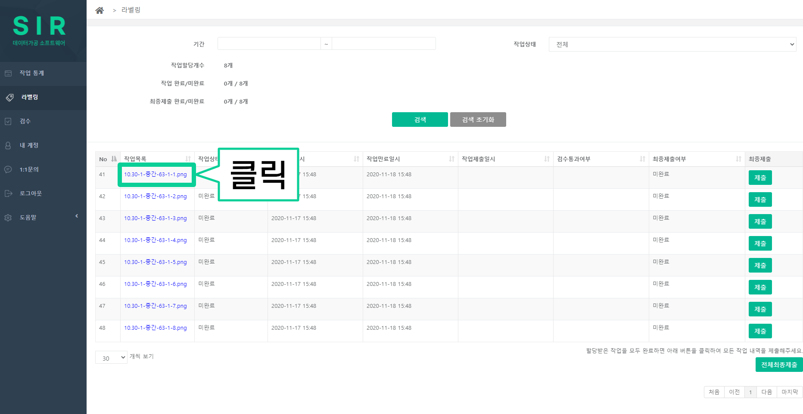

라벨링 작업 방법
1. 라벨링 버튼을 클릭합니다.
2. 파일명(파란글씨)을 클릭합니다.
3. 아래 주어진 사진처럼 이미지와 질문이 나타나면 작업을 시작합니다.

4. 아래 주어진 사진 속 인물이 남자면 ‘Man’ 여자면 ‘Woman’을 선택합니다.
(* 예시로 주어진 아래 사진 속 인물은 남자이므로 ‘Man’을 클릭해줍니다.)
5. 아래 주어진 사진처럼 인물의 얼굴에 맞춰 네모박스를 그립니다.
(* 주어진 사진처럼 인물의 얼굴 전체가 다 들어갈 수 있도록 마우스를 드래그하여 네모박스를 그립니다.)
6. 작업자 본인을 기준으로, 아래 사진 속의 인물은 어느 쪽을 바라보고 있나요?
(* 당신을 바라보고 있으면 “앞”, 등을 돌리고 있으면 “뒤”, 나머지 방향은 아래 사진을 참고하여 선택합니다.)
(* 아래 예시 이미지 속 남자는 당신을 바라보고 있으므로 “앞”을 선택합니다.)
7. 사진 속 인물의 표정에서 느껴지는 감정을 선택합니다.
(* 해당 인물의 감정은 작업자가 보고 느끼는 대로 판단합니다.)

8. 동영상을 시청하고 영상 속 인물이 하는 말을 들리는 대로 입력합니다.
9. 동영상 속 인물이 하는 말(목소리)에서 느껴지는 감정을 선택합니다.
(* 해당 인물의 감정은 작업자가 듣고 느끼는 대로 판단합니다.)
10. 위 동영상 속 인물이 말하고자 하는 바가 무엇인지 선택합니다.
(* 더 자세한 설명은 오른쪽 더보기 버튼을 클릭하여 확인할 수 있습니다.) [더보기]
1. ‘요청’ 이란 대답과 행동을 동시에 요구하는 경우를 말합니다.
1-1. 단순히 위치만 물어보는 것이 아니라 해당 위치로 직접 안내를 요청하는 경우에 ‘요청-위치안내’ 를 선택합니다.
예) 응급실까지 데려다 주세요. / 서울대학교까지 가고 싶어요.
11. 위 동영상 속 인물이 작업자 본인과 소통을 시도하고 있다고 느끼면 ‘네’, 소통하고 있지 않다고 느끼면 ‘아니오’ 를 선택합니다.

12. 작업이 모두 완료되었다면 파란색 ‘Submit’ 버튼을 클릭하여 제출합니다.